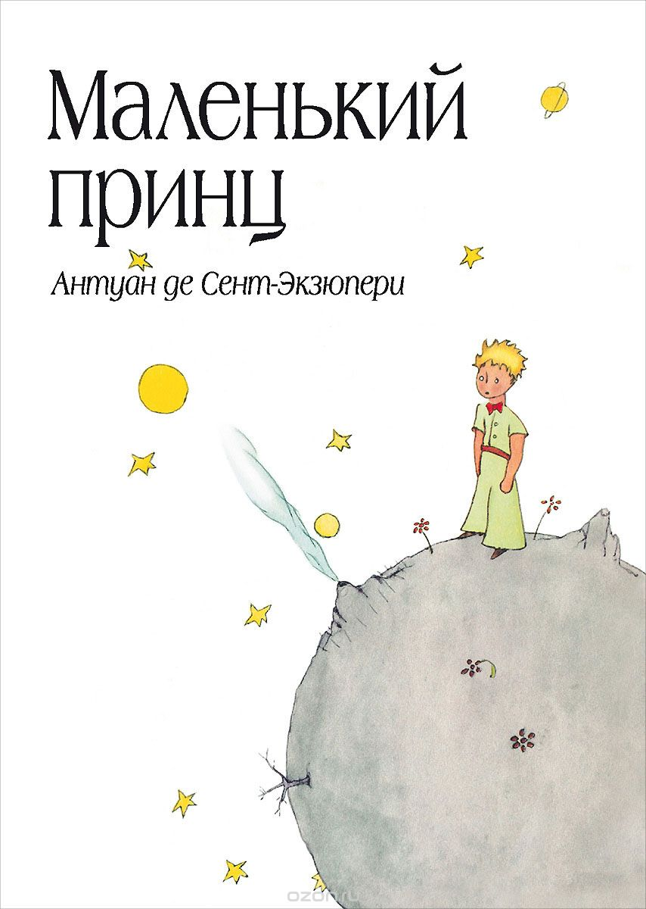

 аллегорическая повесть, наиболее известное произведение Антуана де Сент-Экзюпери. Впервые опубликована 6 апреля 1943 года в Нью-Йорке. Рисунки в книге выполнены самим автором и не менее знамениты, чем сама книга. Важно, что это не иллюстрации, а органическая часть произведения в целом: сам автор и герои сказки всё время ссылаются на рисунки и даже спорят о них. Уникальные иллюстрации в «Маленьком принце» разрушают языковые барьеры, становятся частью универсального визуального лексикона, понятного каждому. «Ведь все взрослые сначала были детьми, только мало кто из них об этом помнит», — Антуан де Сент-Экзюпери, из посвящения к книге.